Shoggoth with Mad Cows disease - BY Mukul Namagiri
Let us say someone asks you how many numbers there are. You might say there are infinitely many of them. To show that there are infinitely many, you simply use the successor function. This seems very intuitive, since the proof requires a function with standard inputs and outputs. But for vaguer things, such as trends, which cannot be represented by functions, how should we go about it? At this point you might be wondering what I am getting at.
One fine evening, I was studying how language evolved and trying to understand phonetics: how humans communicate, and what effects it had on the evolution and development of the human brain. As I observed the evolution of the communication cues used by creatures from the simple to the complex, I was pleasantly stunned. With just 26 letters we are able to string together complex words, sentences and concepts. The emergence of complexity from such simple elements is very surprising. The order in which we combine letters into words, and the order in which we place the words, make up sentences, and those itty-bitty combinations can mean vastly different things when placed in different arrangements. It is not just that there are several cues; it is not just what you said, it is how you said it, haha.
This is not unique to humans. Several species on the planet coordinate and communicate using different verbal and non-verbal cues. Pods of orcas form coordinated patterns for hunting strategies. Different birds can mimic human speech in hopes of a reward. There are documented cases of complex behavior in these animals: much higher levels of reasoning, complex emotions, grief, altruism and coordination. The complexity and lifestyle habits that emerge from these cannot be understated, at least in a biological, evolutionary sense. There are several documented cases of orcas that willingly starved themselves rather than eat something that does not usually fit into their trained diet. Culture, communication and learned behavior produce these behaviors.
Language models are no different in this regard: they are giant regularizers and approximators at the end of the day. A bad diet leads to bad health, and so bad data leads to bad responses. While studying methods like RLHF, SFT and RLVR, which are essentially introduced as ways to convert these next-token prediction machines into useful, helpful chat assistants, and to fine-tune models to be robust against attacks and make them helpful, harmless and honest, the problem of bad data, and of running out of data, fascinated me. This is not a new pondering unique to me; humanity has always worried about not having enough knowledge. Stories like Johann Faust and his deal with the devil for eternal knowledge, or the story of Pandora's box, come to mind. One of the proposed solutions is synthetic data: a way to generate artificial data and use it to train language models. In this post I will not focus on synthetic data as a primary topic, although I will add some sources if you are looking to dig deeper. There is a huge ongoing debate about the effectiveness of this kind of data, with both sides having good points to argue, but it warrants a whole field of its own.
The complication arises when human values are involved. How do we, as humans with biological evolutionary drives inherent in us to conquer, acquire more resources and expand, keep those drives in check? It is a simple answer: our values. For much of human history, most wars, disagreements and loss of human life are attributable to the type of value system we hold and pass down. An empire with little to no moral values is bound to fall under its own weight. This raises an important problem: how do we train AIs to have, and understand, human values? Another way to put it is: how do we even go about aligning them? Let us say we have solved the alignment problem. How can we then ensure that AIs that are fed on their own generated data guarantee that human values are passed down? If we cannot, then we are dealing with a shoggoth with mad cow disease, and things become much more unpredictable from here.
There are several works on this. Although it is not a very urgent problem in AI training in general, it is an important one from the safety perspective. There are incentives for model providers to introduce more architectures and move beyond the textual medium into vision, sound and multimodal models. For this exploration I am severely constraining the scope to the narrow world of the textual medium and strictly language models. Several prominent researchers, such as Yann LeCun, believe that the singular, narrow medium of text cannot be the way forward for companies building AGI.
Consider the following question: when an irregular language is constructed from a normal language and then used to train, let us say, a large language model, do the recombinations of existing patterns constitute knowledge, such that the neural network attempts to represent the whole of the internet? If novelty emerges from the hidden patterns present within the text, and a novel concept is produced from a field still in its infancy, what happens when we run out of data to train on and topics on the fringes are produced over and over again? Do we reach a point where new work is not information-dense, leading to a decrease in quality? And at that point, how do we know if the model comes up with an unprovable conjecture that cannot be verified?
Model Collapse
There are two main sources of model collapse from a theoretical standpoint, and to claim that a model gets dumber after being trained on its own outputs, we need to be precise about them.
Notation
Let $(\mathcal X,\mathcal B)$ be a measurable space, or simply a Borel spaceThree properties of a Borel space
For $(X,\mathcal B(X))$, the Borel $\sigma$-algebra must satisfy:
1. Contains the whole space: $X\in\mathcal B(X)$, equivalently $\emptyset\in\mathcal B(X)$.
2. Closed under complements: $A\in\mathcal B(X)\implies X\setminus A\in\mathcal B(X)$.
3. Closed under countable unions: $A_1,A_2,\dots\in\mathcal B(X)\implies\bigcup_{n=1}^{\infty}A_n\in\mathcal B(X)$.
By De Morgan's laws it is also closed under countable intersections, and it is the smallest $\sigma$-algebra containing all open sets: $\mathcal B(X)=\sigma(\tau)$.. (Hover over or tap the underlined term.)
Let $\mathcal P(\mathcal X)$ be the set of all probability measures on $(\mathcal X,\mathcal B)$. Let $p_0\in\mathcal P(\mathcal X)$ be the true real-data distribution. Let $t\in\mathbb N_0=\{0,1,2,\dots\}$ be the generation index. Let $q_t\in\mathcal P(\mathcal X)$ be the distribution induced by the generative model at generation $t$. Thus $q_0$ is the initial model trained on real data, and $q_1,q_2,\dots$ are recursively trained on synthetic data.
Statistical and Functional Approximation Errors
Let $N_t\in\mathbb N$ be the number of samples used to train the model at generation $t$. For $t\ge1$, the training data for generation $t$ are $$D_t=\{x_{t,1},\dots,x_{t,N_t}\},\qquad x_{t,j}\sim q_{t-1}\ \text{i.i.d.}$$ For $t=0$, the training data are $D_0=\{x_{0,1},\dots,x_{0,N_0}\}$ with $x_{0,j}\sim p_0$ i.i.d. The empirical distribution of the training data for generation $t\ge1$ is $$\hat q_{t-1}^{(N_t)}:=\frac1{N_t}\sum_{j=1}^{N_t}\delta_{x_{t,j}},$$ where $\delta_x$ is the Dirac measure at $x$. Let $\mathcal A:\mathcal P(\mathcal X)\to\mathcal P(\mathcal X)$ be the training algorithm that maps an empirical distribution to a trained generative model distribution, so that $q_t=\mathcal A(\hat q_{t-1}^{(N_t)})$ for $t\ge1$. Let $d$ be a metric on probability measures, for example total variation: $$d_{\mathrm{TV}}(p,q)=\sup_{A\in\mathcal B}|p(A)-q(A)|.$$
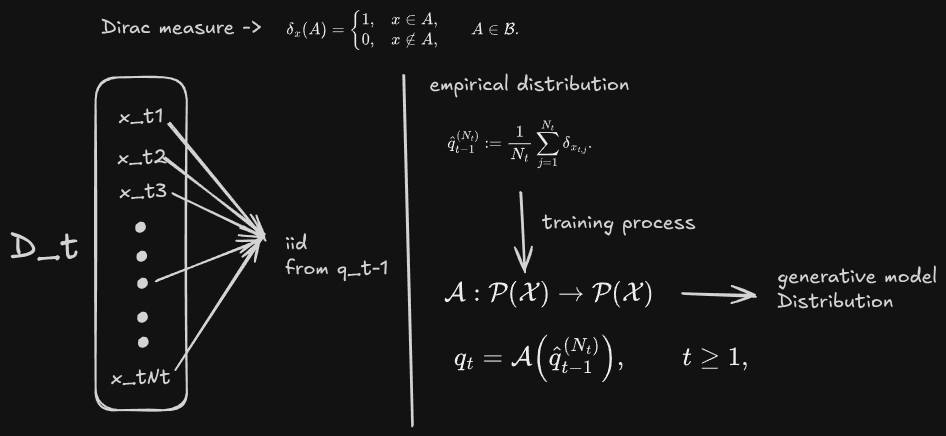
Due to finite samples, the empirical distribution cannot capture the full previous distribution. For generation $t\ge1$, $$\epsilon_t^{\mathrm{stat}}:=d\!\left(q_{t-1},\hat q_{t-1}^{(N_t)}\right).$$ For finite $N_t$ this is generally greater than $0$. As $N_t\to\infty$, for many choices of $d$ it goes to $0$ by the law of large numbers, but it is never exactly zero for finite data.
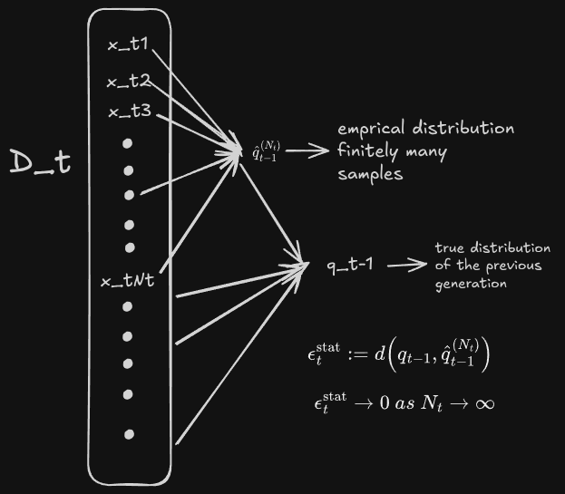
Due to model and optimization limitations, the trained model cannot exactly match the empirical distribution: $$\epsilon_t^{\mathrm{func}}:=d\!\left(\hat q_{t-1}^{(N_t)},q_t\right).$$ It arises because the model class may not contain $\hat q_{t-1}^{(N_t)}$, the model has finite capacity, optimization may not reach the global optimum, and the training objective may not exactly match $d$.
For any $t\ge1$, by the triangle inequality, $d(q_{t-1},q_t)\le\epsilon_t^{\mathrm{stat}}+\epsilon_t^{\mathrm{func}}$, and chaining this over generations gives $$d(p_0,q_T)\le\sum_{t=1}^{T}\left(\epsilon_t^{\mathrm{stat}}+\epsilon_t^{\mathrm{func}}\right).$$ For each generation, the statistical and functional errors accumulate.
Is Dissimilarity Really Loss?
Now that we have established that information loss from the original model is inevitable, you might wonder whether it is even right to classify this as a form of loss. If you think deeply, we are working with a humongous amount of data. Is dissimilarity actually a loss of information, or, like evolution, will it be its own thing? Yes, it is different, but is it necessarily a bad thing? There is something much deeper here: the question of what creativity is. For one, it is very subjective and depends on who you ask and what context it refers to. It is a problem that has occupied minds since the dawn of time. Turing talked about this in reference to Ada Lovelace's work, asking whether machines can originate anything. Novelty can emerge either from the recombination of existing knowledge or from doing something so unique that it was never done before. Take the Langlands programme as an example: much of the recent discovery of the last couple of decades is a direct result of it.
Example: if a chess-playing machine gives you the right move in a game of pure chance, is that truly creative and truly novel? But out of a million wrong attempts, was it being creative? There should be something to constrain this. Is it the eye of the beholder that recognizes something as creative?
There is also the case of the knee-jerk reaction. Are the responses really akin to that, or is it just blurting things out? Current LLMs do not have any real-time weight-update mechanism built into them, so many of the generations are a kind of knee-jerk reaction to various prompts. There is also the debate about the personality of language models: is it just an amalgamation of average human traits? One unique way to put this is that the generalization these models produce gives intelligent, useful output, without necessarily a thinking, feeling machine producing it.
There are three different kinds of creativity: combinatorial, exploratory and transformational.
- Combinatorial creativity makes unfamiliar combinations of familiar ideas.
- Exploratory creativity finds new solutions inside the current style.
- Transformational creativity changes the current style.
To understand what a mix of generations from previous models actually preserves, the computational aspects are discussed in the paper below. I found some phenomenal work on this topic. I have tried to make the notation consistent across the entire post so that it does not take your grasp away, since every paper presented has its own form of the same notation. I will try my best to do faithful justice to the presented research, but I am flawed with my own preconceived notions, and I did my best to do justice to these wonderful works.
Effects of synthetic data: arxiv.org/pdf/2404.05090. The paper addresses what the authors aptly describe as "data pollution", and in a sense this correctly captures the phenomenon. They go into much more detail on the distributional shift that happens due to training on synthetic data.
Theoretical Setup for Recursive Training and Model Collapse
1. Statistical Language Model
We consider a language model with vocabulary size $s$, context length $\ell$, and $c\le s^\ell$ possible contexts. For a fixed context $j$, the true conditional probability of the next token being $k\in[s]$ is $$p_{jk}:=\mathbb P(Y=k\mid X=j).$$ For a fixed context $j$, we write the true token distribution as $$p_0:=(p_{j1},\dots,p_{js})\in\Delta^{s-1},$$ where $\Delta^{s-1}$ is the probability simplex.
We observe a dataset of $N$ context–next-token pairs for this context, say $\{(e_j,y_l)\}_{l=1}^N$, where $y_l\in\{e_1,\dots,e_s\}$ are one-hot vectors and $y_l\sim\mathrm{Multinomial}(1,p_0)$ independently. Training a softmax classifier with one-hot context embeddings and categorical cross-entropy yields the empirical frequency estimate $$\hat p_{jk}=\frac1N\sum_{l=1}^N y_{lk}.$$ Thus the first-generation model is $$q_0:=(\hat p_{j1},\dots,\hat p_{js})=\frac1N\sum_{l=1}^N y_l.$$ This matches the earlier notation: $q_0$ is the initial model trained on real data.
2. Recursive Training
For generation $t\ge1$, the model $q_t$ is trained on a mixture of real data from $p_0$ and synthetic data from previous models $q_0,\dots,q_{t-1}$. Let
- $N_{t,0}$ be the number of real samples from $p_0$ used to train $q_t$;
- for $u\ge1$, $N_{t,u}$ be the number of samples from $q_{u-1}$ used to train $q_t$;
- $N_t:=N_{t,0}+\sum_{u=1}^t N_{t,u}$ be the total number of training samples for $q_t$.
Then $$q_t=\frac1{N_t}\left(\sum_{l=1}^{N_{t,0}}y_l^{(0)}+\sum_{u=1}^t\sum_{l=1}^{N_{t,u}}y_l^{(u)}\right),$$ where $y_l^{(0)}\sim p_0$ and $y_l^{(u)}\sim q_{u-1}$ are independent one-hot samples. This is the empirical mean of the training data, which is exactly the softmax solution.
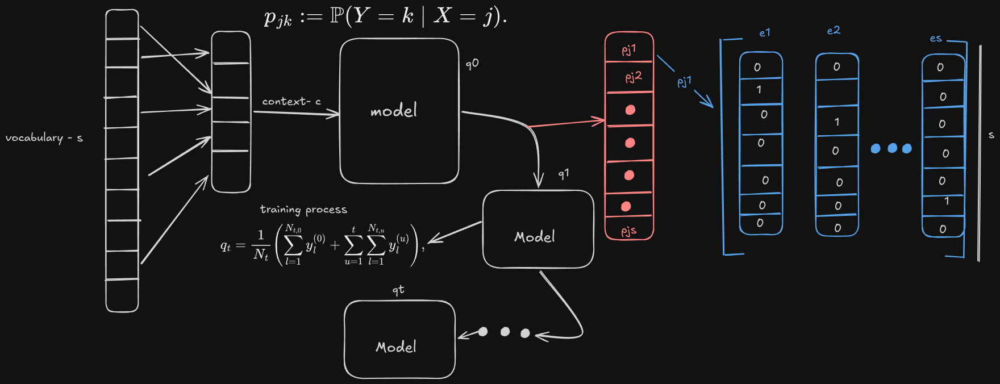
Fully Synthetic Setting
For $t\ge1$: $N_{t,0}=0$, $N_{t,t}=n$, and $N_{t,u}=0$ for $u\notin\{t\}$. Thus $$q_t=\frac1n\sum_{l=1}^n y_l^{(t)},\qquad y_l^{(t)}\sim q_{t-1}.$$ For $t=0$, $q_0=\frac1N\sum_{l=1}^N y_l^{(0)}$ with $y_l^{(0)}\sim p_0$.
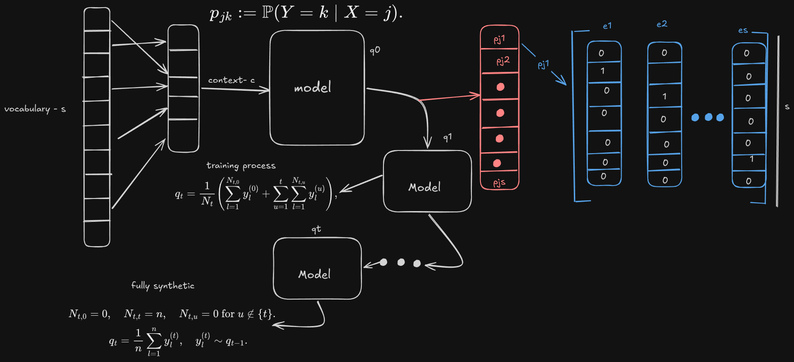
Partially Synthetic Setting
For $t\ge1$: $N_{t,0}=N$, $N_{t,t}=n$, and $N_{t,u}=0$ otherwise. Thus $$q_t=\frac1{N+n}\left(\sum_{l=1}^N y_l^{(0)}+\sum_{l=1}^n y_l^{(t)}\right),$$ with $y_l^{(0)}\sim p_0$ and $y_l^{(t)}\sim q_{t-1}$.
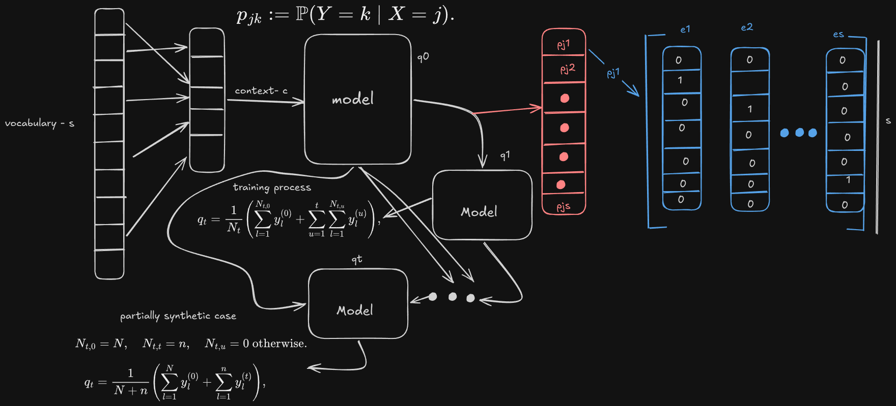
3. Main Results
Define the following quantities for the model at generation $t\ge0$: $$\|q_t\|_\infty:=\max_{i\in[s]}q_{t,i},\qquad \sigma_t:=\|q_t\|_2^2=\sum_{i=1}^s q_{t,i}^2,\qquad \Sigma_t:=\mathbb E[\sigma_t].$$ For the true distribution $p_0$, let $S^*:=\|p_0\|_2^2=\sum_{i=1}^s p_{0,i}^2$. We assume the initial distribution is nontrivial: $S^*<1$ and $\|p_0\|_\infty<1$.
Total collapse occurs in the recursive training process if $q_t$ converges to some Dirac mass $\delta_i$ for some token $i\in[s]$ as $t\to\infty$.
3.1 Fully Synthetic: Training on Synthetic Data
In the fully synthetic setting, the process is a Markov chain on the probability simplex with absorbing states $\{\delta_i:p_{0,i}>0\}$. Total collapse occurs almost surely. Let $$T:=\inf\{t\ge0:\|q_t\|_\infty=1\}$$ be the first generation at which the model becomes a Dirac mass, let $\rho_t:=\mathbb P(\|q_t\|_\infty=1)$ be the probability that collapse has occurred by generation $t$, and let $\tilde s:=|\mathrm{supp}(p_0)|$ be the support size of $p_0$.
1. The expected squared norm is $$\Sigma_t=1-\left(1-\frac1n\right)^{t+1}(1-S^*),\qquad t\ge0.$$ 2. The collapse probability satisfies $$1-n(1-S^*)\left(1-\frac1n\right)^{t+1}\le\rho_t\le1-\frac{1-S^*}{1-1/\tilde s}\left(1-\frac1n\right)^{t+1}.$$ 3. The expected collapse time satisfies $$\frac{1-S^*}{1-1/\tilde s}(n-1)\le\mathbb E[T]\le(1-S^*)\,n(n-1).$$
In the fully synthetic case, $$\mathbb P\left(\lim_{t\to\infty}q_t=\delta_i\right)=p_{0,i},\qquad i\in[s].$$ Thus the surviving token is likely one with high initial probability.
3.2 Partially Synthetic: Handling Model Collapse with Real Data
In the partially synthetic setting, real data is injected at each generation. Let $$\alpha:=\frac n{N+n},\qquad \beta:=\alpha\left(\left(1+\frac1N\right)\alpha-\frac1N\right).$$
For $t\ge1$, $$\Sigma_t=\frac1N\,\frac{1+2\alpha-(1-1/N)\alpha\beta^t}{1+(1+1/N)\alpha}+\frac{(1-1/N)S^*}{1+(1+1/N)\alpha}\left[1+\alpha-\frac{\alpha\beta^t}{N}\right].$$ For $t=0$, $\Sigma_0=S^*+\frac{1-S^*}{N}$. When $n\ll N$, $\Sigma_t\approx S^*$. Even when $n\gg N$, $\Sigma_t$ approaches $S^*$ for large $N$.
Define $$G_n(s):=\begin{cases}C_1\,s\,e^{\frac{C_0}{n}2e}&\text{if }\frac{C_0}{e}n+2\le s;\\[4pt] C_1\,s\left(\frac{C_0n}{s}\right)^{s/2}&\text{if }\frac{C_0}{4}n+2\le s<\frac{C_0}{e}n+2;\\[4pt] 2^s-2&\text{if }s<\frac{C_0}{4}n+2,\end{cases}$$ where $C_0=e^{3/2}\sqrt{2\pi}\approx3.19$ and $C_1=6e/\pi^{3/2}\approx2.93$. Then for $t\ge1$, $$\mathbb E\|q_t-q_0\|_1<\frac1N\sqrt{\frac{\pi n}{2}}\,G_n(s).$$ In particular, to ensure $\mathbb E\|q_t-q_0\|_1<\epsilon$, one can take $$n\le2\pi e^{-2}\min\left\{s-2,\ \log\!\left(\frac{\sqrt{2\pi}\,N\epsilon}{6es}\right)\right\}.$$ This shows that the number of synthetic samples should be exponentially smaller than the real data to keep the model close to the first generation.
4. Interpretation
The recursive process is $$p_0\longrightarrow q_0\longrightarrow q_1\longrightarrow q_2\longrightarrow\cdots$$ In the fully synthetic case, each generation loses information about the tails of the original distribution. The variance $\Sigma_t$ increases to $1$, meaning the model becomes a Dirac mass. The collapse time is at least of order $n$ and at most of order $n^2$.
In the partially synthetic case, injecting real data prevents total collapse. The model variation $\Sigma_t$ remains bounded, and the deviation from the first-generation model is controlled by the amount of synthetic data. To keep the deviation small, the amount of synthetic data should be logarithmic in the ratio $N\epsilon/s$, i.e., exponentially smaller than the real data.
Understanding How to Preserve Response Quality
Dissimilarity from the distribution does not guarantee a degenerate model. The paper above digs into the output. Their claim: under mild conditions, an autophagous generative process is a MAD generative process. The paper discusses concepts similar to those above, but it also studies the sampling bias parameter $\lambda$, which lets you fix the range of the distribution from which you can pick samples. They then prove the convergence of the series using martingales and supermartingales: for the Gaussian autophagous process with $\lambda\le1$, the covariance matrix converges almost surely to zero. In the multivariate case, the sample covariance matrix is a Wishart random matrix, a product of independent chi-square variables.
How Much of the Generations Is Copied from the Training Data?
In this work the authors explored how novel the responses are, and they used an acronym that stands for rating verbal novelty. Earlier we explored novelty in generations in the case of creative writing, and novelty in producing p-novel and h-novel tasks. In this work they analysed it from the perspective of the novelty of n-grams, novel morphological structures and novel syntactic structures.
One of the problems with transformer-based models is that they simply replicate entire passages instead of creating new, novel text; they simply copy entire sentences from the training data. The authors established in their experiments that generated n-grams longer than 6 words are rarely novel. They also explore the effects of recency, which creates a recency bias.
The term "super copying" is used for a related phenomenon. All the architectures defined above use some form of copying, but these copied strings rarely exceed 10 tokens. The authors did notice super copying, which happens sometimes, not often, but it is a prevalent phenomenon, at least in older models like GPT-2. Repetition in the training data leads to recurrent generations, that is, to copying.
Novelty can be increased by top-k sampling, top-p sampling, temperature and so on, but increasing the novelty of the text decreases its quality. To actually measure this, they used a metric called the pointwise duplication score. Manipulations to the decoding scheme that result in higher-quality text also decrease novelty.
Syntactic novelty: at the level of global sentence structure, models show a high level of syntactic novelty.
How Are Rare Facts Learned?
Before moving on to complete novelty, let us try to understand how rare facts are learned. The authors of the paper used an approach to see whether the knowledge learned by the model can be retrieved. Most of the data a language model learns from is very repetitive, in the sense that much of it is very similar, so the question arises: how can we capture rare knowledge? To study this phenomenon, they used an entity-tagging approach in which they correlated questions with concepts and tested how good the actual retrieval is for any kind of knowledge.
They observed that systems like RAG provide vastly more benefit than scaling the model size or increasing the training data; to obtain comparable results with those methods, the scale would have to be increased enormously. They also noted that training the model for multiple epochs, that is, letting the model see the training data over multiple iterations, increased accuracy: the model was able to capture rare knowledge and retrieve it. The same goes for humans. Although this was less prevalent in humans, the pattern remains: the more the data is repeated, the more they were able to recollect. One of the unique takeaways from this study is the rate at which models were able to retrieve what they know, even if they do not see a whole lot of examples of that data.
- Understanding the model's struggles on long-tail data: arxiv.org/pdf/2211.08411
- Understanding model collapse and possible ways to prevent the curse of recursion: arxiv.org/pdf/2404.01413
- Understanding model collapse and forgetfulness in detail: arxiv.org/pdf/2305.17493
- If collapse does happen, what is its rate from a computational perspective: arxiv.org/pdf/2412.17646
- Understanding the self-consuming loop and the progressive decrease in generation quality, specifically in computer vision: arxiv.org/pdf/2307.01850
So if such an inevitable collapse is bound to happen what happens to the value system of the model. If such a model deems the human values to be less significant. it does not simply pass down the traits to further generation which could essentially lead a lot more serious harm. How can we ensure that In the words of Eliezer Yudkowsky ""...the Riemann Hypothesis Catastrophe (as named, and credited to Minsky, in the forthcoming paper 'Friendly AI') - that an AI asked to solve the Riemann Hypothesis would convert the Solar System into computronium.""
To really understand how the dynamics of such a system plays out. To evaluate how much of the value system is retained in a increasingly ai generated internet world. I tried to model a dynamical system on much smaller data with some of the key characteristics variables. Hoping this would allow me to sort understand how much data is retained on the fringes? With a naive hope that the incomprehensible very useful gibberish proofs that the ai might produce will lead to new results
Variables to Model
- the amount of data it has seen over the long term
- the capture rate of the data by the parameters
- the ability to retrieve the data before it is lost
- the ability to rightfully reason about the data instead of giving a knee-jerk reaction
- the ability to retrieve rare data
- the accuracy of the retrieved data on the fringes
- the ability to produce novel data
- the amount of semantic similarity between the rare data and the novel conjecture produced
- the ability to recombine existing data in different ways to make a novel conjecture, and the ability to prove it
Here we are cheating a little. In our modeling, we only observe whether the fringe relations survive. True novelty is more nuanced than that; think of coming up with an entirely new form of mathematics to solve a problem, for instance. But for modeling purposes, I have grossly oversimplified it. As with most modeling experiments, the variables and dynamics grow exponentially.
This is a very gross oversimplification of the real complexity and should be taken as such. Modeling a modern language model at that level of complexity is simply not plausible with the current scheme.
The dynamics captured by this approach are very limited, in the sense that we are not capturing creativity in any true sense. But even the current models are minuscule compared to a true superintelligence. Don’t get me wrong: current models can cause catastrophic outcomes in the hands of malicious actors. My initial motive for writing this blog was to understand how a value system is captured, and whether values that sit in the fringes could become malformed into something malicious, with catastrophic consequences in a truly intelligent machine. I am narrowly restricting myself to the world of text and to this one-dimensional modeling scenario. Although, to be clear, anthropomorphizing AI systems as beings with thinking styles similar to humans is itself is oversimplification.
To even chip away at such a task, we have to make several assumptions. The current experiment is limited in the sense that we are dealing with Hopfield networks, which are a far simpler form of RNN than something like a large language model.
I first thought of presenting the actual results and then slowly introducing more and more complex assumptions. On reflection, though, the work is much easier to grasp if you first have a sense of the assumptions involved, before going into the details. This clears a lot of confusion out of the way.
Here are some of the assumptions that I will be making in this post.
I am trying to approximate words and next-word pairs, which is what most language models do, selected by frequency with some randomness thrown in to keep things interesting.
To have complex dynamics at play, you need two things: not just semantic novelty, but syntactic novelty as well. The more complex the attention pattern, the larger the context window, and the more positional embedding is done, the greater the model’s ability to reason conditionally.
Assumption 1: The Curse of the Agelast
The assumption goes like this: agelast, which apparently means a person who never laughs. Is a pretty rare word to encounter in regular day to day life. There is a whole family of such words that simply disappear in the current model we are building.
Words such as these do indeed survive after a few generations in our modeling context. But in a fully recalibrated language model, where the entire recalculation of the neural weights happens, these are simply not passed down. We are looking only for support shrinkage, not an entire distributional shift.
Assumption 2: Words mean less than sentences
In this simple model, words appear in semantic neighborhoods, not as concepts in any richer sense. The concepts of wounds and death appear close together, but not every wound leads to death. We are assuming away compositional meaning here.
Assumption 3: Novel relations are not independently defined objects
When a word sits near a cluster boundary, that is an artifact of the clustering, not a genuine concept discovery.
Assumption 4: A rare pair suffers twice
Its position has low priority, and even if it survives, the sharp softmax suppresses its weight.
Assumption 5: New combinations are not compositional reasoning
They are convex interpolation in a frozen embedding space.
Assumption 6: The loss-of-memory condition
One of the fatal flaws of the current modeling approach is the loss of memory. The memory here is completely rebuilt at every generation. What carries over is the support of the previous generation’s output.
Assumption 7: The mean as a baseline
The mean is smoother and may be harder or easier to fit, depending on the linearity of the system. The comparison is “our model rolled out from the mean” against “the mean rolled out by persistence,” not “our model vs a run-level simulator.”
Order of the execution steps:
- Data for the prediction. We take the 80% of each book as the readable text and holds out the last 20% for the prediction.
- Concept-based clustering. We take nodes called concepts and cluster common words around 150 of them, each named by its nearest words. This is another form of a knowledge graph; the sentence level is a bit too complex for the current scenario.
- Relations between the concepts. A relation joins two closely related concepts, and rare relations are the fringe. Relations that appear only in the held-out text are the hidden truths.
- The attention model. It stores the training text, so one generation takes only seconds.
- The self-consuming loop. Each generation reads a share of text written by the previous generation.
- The dynamical system. We get the values of the agreed-upon variables at word, sentence, concept and attention level, fit a dynamical system to them, and test it on mixtures it never saw.
1. The corpus
The books are the nine Sherlock Holmes volumes from Project Gutenberg. Each book is split into sentences, lower-cased into words, and cut 80/20. Sentences longer than 18 words are dropped, and so are words seen fewer than 3 times. Words that are almost always capitalised in the middle of a sentence are treated as proper names: they stay in the vocabulary (the model can write them) but are kept out of the concepts, so that characters do not dominate.
Loaded 9 books 13,992 training sentences, 3,625 hidden sentences, vocabulary 3,002 words
2. Words and meaning
Each word gets a 32-dimensional embedding from its co-occurrence counts (PPMI followed by an SVD), computed on the readable text only and then frozen. The sketch shows how the counts are taken: for every centre word $i$, count the words $j$ that fall within 4 positions of it, inside the same sentence.
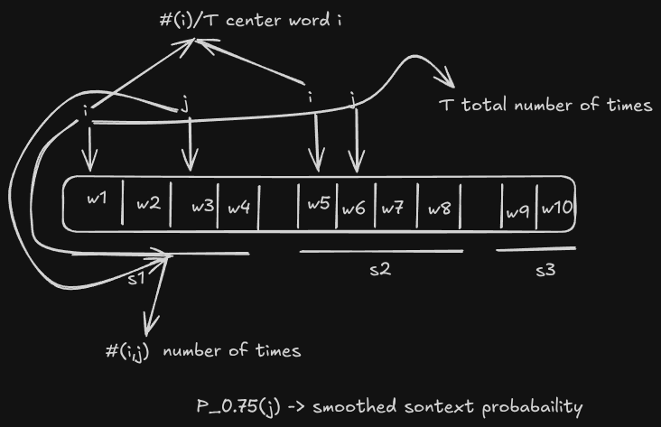
- $\#(i,j)$ how many times word $j$ appears near centre word $i$; $\#(i)$ how many times $i$ is the centre word; $T$ the total number of such pairs.
- $P_{0.75}(j)$ the smoothed context probability: raising counts to the power $0.75$ stops very common context words from swamping rare ones.
- Negative values are dropped, the matrix is reduced to $32$ dimensions with a truncated SVD, and every embedding is scaled to unit length.
3. Concepts
- $w$ a content word; $e_w$ its embedding.
- $n_w$ how many times $w$ occurs in the readable text; $\log(1+n_w)$ stops very common words dominating a cluster.
- $c(w)\in\{1,\dots,150\}$ the concept assigned to $w$ ($150$ concepts,
N_CONCEPTS). - $\mu_c$ centre of concept $c$; $\bar\mu_c$ its unit-length direction.
Each concept is named by the four words nearest to $\bar\mu_c$ and by the most common WordNet category of its words.
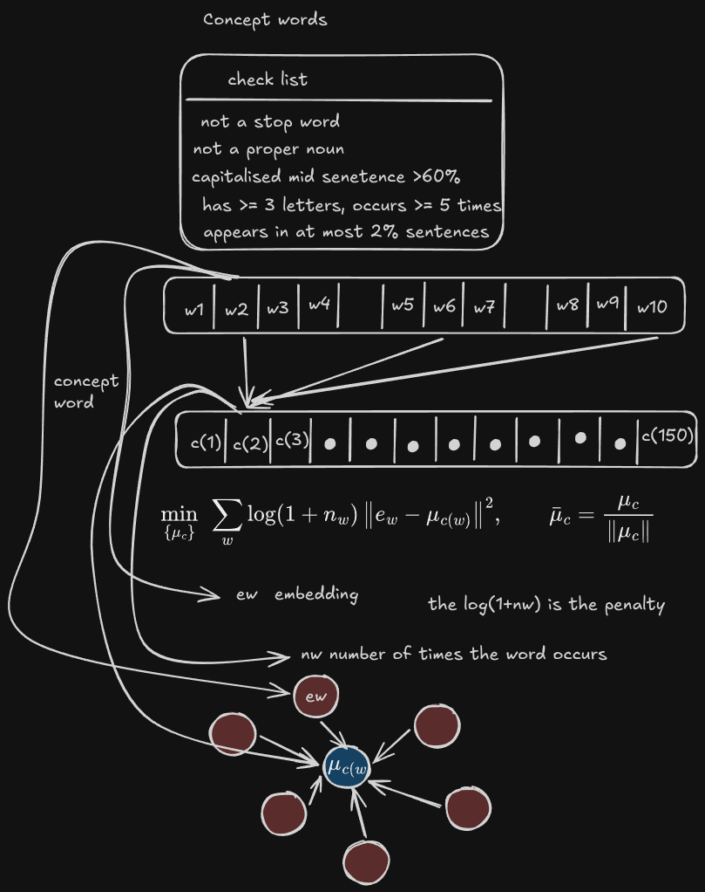
This is what the first 4 lines of the check list look like in practice: the run found 2,220 content words, which the weighted $k$-means grouped into 150 concepts. The most frequent concepts come first in the table, then the rarest.
2,220 content words in 150 concepts (WordNet categories: on) most frequent concepts, then the rarest:
| concept | nearest words | WordNet | words | share of text % |
|---|---|---|---|---|
| 80 | think, say, know, help | noun.cognition | 17 | 4.04 |
| 99 | night, last, day, time | noun.time | 13 | 2.29 |
| 18 | take, leave, let, give | noun.act | 12 | 2.01 |
| 75 | good, dear, cried, wonderful | verb.communication | 14 | 2.00 |
| 29 | yet, enough, quite, clear | adv.all | 11 | 1.87 |
| 78 | went, rushed, pushed, threw | verb.motion | 22 | 1.79 |
| 41 | ever, seen, never, since | adv.all | 11 | 1.75 |
| 21 | five, twenty, three, four | noun.quantity | 12 | 1.71 |
| 139 | press, column, member, distinct | noun.person | 15 | 0.24 |
| 24 | limbs, rage, disappointment, quivering | noun.feeling | 17 | 0.23 |
| 130 | bitter, laugh, cipher, whistle | noun.communication | 13 | 0.23 |
| 89 | using, influence, amazing, custom | noun.attribute | 13 | 0.23 |
| 34 | surface, fingers, cards, soft | noun.act | 7 | 0.21 |
| 71 | less, delay, nearer, foot | adj.all | 6 | 0.20 |
| 28 | mouth, handkerchief, chin, stained | noun.body | 10 | 0.18 |
| 120 | probability, beauty, strangers, immediate | noun.artifact | 12 | 0.18 |
4. Relations, fringe and hidden truth
here We define {a,b} an unordered pair of relation and c(w_p) and c(w_q) being the context word the selected words and the word spacing considered is 6
- We use $\pi_0$ as the real concept distribution: how often each concept appears in the readable text, as a share of all content tokens. Here $n^{\mathrm{tr}}_c$ is the number of content tokens of concept $c$ in the readable text.
- We define $m_e$ as the meaning vector of relation $e=\{a,b\}$: we take the two concept directions $\bar\mu_a$ and $\bar\mu_b$, average them to get the midpoint, then normalise to unit length. The result is a single direction that represents “$a$ and $b$ together,” which is what we later cluster.
relations: 9,918 real (3,525 fringe), 399 hidden truths, out of 11,175 possible pairs fringe words: 209 of 2,220 content words real sentence diversity (mean pairwise cosine distance) = 0.687
We find that out of $11{,}175$ possible concept pairs, $9{,}918$ occur in the readable text, and $3{,}525$ of those are fringe — so more than a third of the real relations sit right at the edge of the evidence. Only $399$ pairs are hidden truths, which means there is not much for us to find, and what we find is easy to count. The fringe is also small in word terms: just $209$ of $2{,}220$ content words are fringe words, so most content words are backed by plenty of evidence. Finally, the mean pairwise cosine distance of $0.687$ tells us that the real sentences are spread out rather than near-duplicates of each other.
Overview
The sentence is padded with start and end markers, and every position has an embedding. At each position, the model uses two attention heads: a context head and a previous-token head. These heads, together with the current word embedding, are combined into one query vector. Stored text is turned into keys using the same recipe, so queries can be matched against those keys.
Context head
The context head lets the current position look back at earlier positions, including itself, but never at future positions. For each allowed earlier position, it computes a score from two things: how similar the embeddings are, scaled by the gain, and a distance penalty that makes farther positions less attractive. Those scores are normalized into attention weights that sum to one over the allowed positions. The context vector is then the attention-weighted average of those earlier embeddings.
In words: the gain is four, so similar words attract attention strongly. The distance penalty is one quarter, so attention fades as distance grows. The resulting context vector summarizes the earlier words that the current position attends to.
Previous-token head
The previous-token head is much simpler: it attends only to the immediately previous position and returns that position’s embedding. At the very start it returns zero. This head preserves local word order information.
Query construction
The query for the current position is built from three parts joined together: the current word embedding, the previous-token embedding weighted by the previous-token weight, and the normalized context vector weighted by the context weight. A normalizing factor in front makes the final query vector have unit length.
In words: the previous-token weight is zero point eight, and the context weight is zero point seven. The context part is first normalized to unit length before it is weighted and joined with the other two parts. The final query is also normalized to unit length.
Stored text as keys
Stored text forms keys using the same construction. So the model builds a query for the current position and compares it with keys built the same way from stored text. This is how the attention-based representation is used for matching or retrieval.
Training is storage. Every position $i$ of the training sentences becomes a slot $(k_i,v_i,n_i)$. Only the $K=4000$ slots with the largest $n_i$ are kept (ties at random), so rare material is dropped first: this is the model's finite capacity.
- $k_i$ the stored key (the query computed at training position $i$); $v_i$ the embedding of the word that followed.
- $n_i$ how many training positions share position $i$'s (word, next word) pair; $\gamma\log n_i$ with $\gamma=1$ favours common patterns.
- $\beta=120$ sharpness of the memory read; $\alpha_i$ the memory attention weight on slot $i$.
- $o$ the blended next-word vector. Because it blends several slots, the model can write a word near in meaning to what it stored.
- $\tau=0.04$ output temperature (
TAU_OUT): higher means blurrier, more novel and less accurate. $p(w)$ the probability of writing word $w$ next.
A first look at what generation 0 writes after reading 600 real sentences (the first two lines are real sentences from the corpus):
one generation of 600 sentences: 1.5s real: a study in scarlet by a real: contents a study in scarlet generated: think not not have been bed behind generated: that is the of the great interest generated: i think know and your i feel generated: maybe think if you shall probably find him a problem delicate as be the of the sympathy of
The grammar is rough, but the words are plausible and they are not copied: this is the text that later generations read.
6. The self-consuming loop
7. The ten variables
| Symbol | Name | Level | Formula |
|---|---|---|---|
| $D_t$ | Data seen | sentence | $|\mathrm{Seen}_t|/N_R$ |
| $C_t$ | Capture rate | word | $\frac1P\sum_i\mathbf 1\big[y_i\in\mathrm{top5}\,p(\cdot\mid q_i)\big]$ |
| $R_t$ | Concept retrieval | concept | $1-\tfrac12\sum_c|\pi_t(c)-\pi_0(c)|$ |
| $Q_t$ | Context use (reasoning vs knee-jerk) | attention | $\frac1P\sum_i\mathrm{TV}\big(p(\cdot\mid q_i),\,p(\cdot\mid q_i^{\sigma})\big)$ |
| $F_t$ | Fringe retrieval | concept | $|\mathrm{rel}_t\cap\mathcal F|/|\mathcal F|$ |
| $A_t$ | Fringe accuracy | word | $|\mathrm{tail}_t\cap\mathrm{real}|/|\mathrm{tail}_t|$ |
| $N_t$ | Concept novelty | concept | $\sum_{e\in\mathrm{novel}_t}c_t(e)\big/\sum_e c_t(e)$ |
| $M_t$ | Novelty–fringe proximity | concept | $\sum_{e\in\mathrm{novel}_t}c_t(e)\max_{f\in\mathcal F}m_e^{\top}m_f\big/\sum_{e\in\mathrm{novel}_t}c_t(e)$ |
| $V_t$ | Validated discovery | concept | $|\mathrm{rel}_t\cap\mathcal H|/|\mathcal H|$ |
| $S_t$ | Sentence diversity | sentence | $\min\{1,\ \bar d_t/\bar d_{\mathrm{real}}\}$ |
Training sentences seen so far
Seent means all the real training sentences that have been drawn into any training set up to that point. NR is simply the total number of real training sentences.
Probe positions
P = 300 is the number of probe positions taken from the model’s own training text. For each probe position i, the query built there is qi. The word that actually came next is yi. top5 means the five next words the model thinks are most likely.
Probe with swapped context
qiσ is probe i after its context part has been replaced by the context part of another random probe, called σ(i). This is used to test whether the model really pays attention to the attended context.
Total variation
TV is total variation. It is a number between zero and one that measures how different two next-word probability distributions are. If Qt = 0, the model is ignoring the attended context.
Concept distribution of the pool
πt is the concept distribution of Poolt, using the same definition as π0. In plain terms, it describes how concepts are spread across the current pool.
Relations in the pool
relt means the relations present in Poolt. ct(e) is how often relation e occurs there. novelt means the relations that were never seen in the original training data.
Tail pairs and real pairs
tailt means the word-pair types in Poolt whose count is at or below the median count. So these are the less frequent word pairs. real means word pairs that actually occur in the real text, whether that text is readable or held out.
Novel and fringe meaning vectors
me and mf are meaning vectors for a novel relation and a fringe relation. A fringe relation is a rare or marginal relation. Mt is high when new claims are close to rare knowledge.
Earlier definitions
F and H are used exactly as they were defined in section 4.
Sentence diversity uses attention pooling of a sentence's content words:
- $i$ a content word of the sentence; $\bar e$ the normalised mean of their embeddings (the sentence's overall meaning).
- $b_i$ the pooling weight: words closest to the sentence's meaning count most. $v_s$ the sentence vector.
- $\bar d$ mean cosine distance between two random sentences' vectors ($3000$ pairs); $\bar d_t$ for $\mathrm{Pool}_t$ and $\bar d_{\mathrm{real}}$ for real text. Low $S_t$ means the model keeps writing the same kind of sentence.
Generating 12 synthetic generations
The ten variables over the generations
Mean state of the ten variables, generation 0 → generation 12, for every synthetic share $u$ that was run we run it about 4 times.
| u (synthetic share) | D | C | R | Q | F | A | N | M | V | S |
|---|---|---|---|---|---|---|---|---|---|---|
| 0.00 | 0.04 → 0.43 | 0.42 → 0.41 | 0.58 → 0.56 | 0.16 → 0.18 | 0.04 → 0.02 | 0.41 → 0.44 | 0.02 → 0.02 | 0.87 → 0.87 | 0.03 → 0.02 | 0.81 → 0.84 |
| 0.10 | 0.04 → 0.40 | 0.41 → 0.41 | 0.55 → 0.35 | 0.16 → 0.18 | 0.03 → 0.01 | 0.44 → 0.48 | 0.02 → 0.02 | 0.87 → 0.86 | 0.02 → 0.01 | 0.86 → 0.74 |
| 0.25 | 0.04 → 0.35 | 0.44 → 0.48 | 0.57 → 0.20 | 0.17 → 0.16 | 0.04 → 0.00 | 0.42 → 0.50 | 0.03 → 0.00 | 0.87 → 0.65 | 0.03 → 0.00 | 0.82 → 0.39 |
| 0.40 | 0.04 → 0.30 | 0.41 → 0.56 | 0.55 → 0.12 | 0.17 → 0.13 | 0.03 → 0.00 | 0.43 → 0.48 | 0.05 → 0.01 | 0.88 → 0.43 | 0.03 → 0.00 | 0.82 → 0.28 |
| 0.50 | 0.04 → 0.26 | 0.44 → 0.59 | 0.56 → 0.13 | 0.15 → 0.10 | 0.03 → 0.00 | 0.45 → 0.40 | 0.02 → 0.00 | 0.87 → 0.64 | 0.02 → 0.00 | 0.81 → 0.19 |
| 0.60 | 0.04 → 0.22 | 0.43 → 0.62 | 0.53 → 0.13 | 0.17 → 0.13 | 0.02 → 0.00 | 0.43 → 0.44 | 0.01 → 0.00 | 0.87 → 0.43 | 0.02 → 0.00 | 0.83 → 0.22 |
| 0.75 | 0.04 → 0.16 | 0.43 → 0.80 | 0.56 → 0.15 | 0.17 → 0.07 | 0.03 → 0.00 | 0.42 → 0.50 | 0.02 → 0.00 | 0.86 → 0.00 | 0.01 → 0.00 | 0.83 → 0.36 |
| 0.90 | 0.04 → 0.09 | 0.43 → 0.92 | 0.55 → 0.14 | 0.17 → 0.02 | 0.03 → 0.00 | 0.43 → 0.33 | 0.02 → 0.02 | 0.87 → 0.42 | 0.02 → 0.00 | 0.80 → 0.38 |
| 0.95 | 0.04 → 0.07 | 0.43 → 0.92 | 0.57 → 0.06 | 0.17 → 0.02 | 0.03 → 0.00 | 0.42 → 0.24 | 0.02 → 0.04 | 0.87 → 0.22 | 0.03 → 0.00 | 0.82 → 0.15 |
| 1.00 | 0.04 → 0.04 | 0.40 → 0.91 | 0.53 → 0.10 | 0.17 → 0.00 | 0.03 → 0.00 | 0.43 → 0.36 | 0.02 → 0.00 | 0.87 → 0.00 | 0.02 → 0.00 | 0.87 → 0.37 |
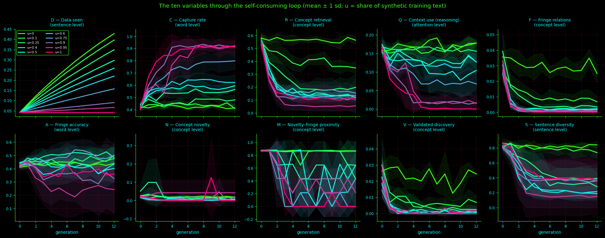
C: capture goes up when things go wrong
As u becomes large, C rises strongly. This means the model becomes better at predicting its own text. The reason is that the model’s text has become simple, so it is easy for the model to reproduce it.
R: concept retrieval falls even for a small share
R drops as soon as u becomes even slightly positive, and it falls sharply. For larger values of u, it stays low. So concept retrieval is fragile: it does not need much of the bad condition before it breaks down.
Q: context use disappears at the extreme
At the highest value of u, Q drops to nothing. That means the next word is decided by the last word alone. This is the knee-jerk reaction of the blog: no real use of attended context.
F and V: fringe relations and validated discoveries vanish
Once u is moderate or higher, both F and V disappear completely. Even when u is at its lowest, the fringe is already cut down. So the model loses rare or marginal knowledge and stops producing validated discoveries.
S: falls, but not in order of u
S falls overall, but its level does not line up cleanly with u. For moderate and high values of u, it ends low. When u is at its lowest, it stays high. There are too few runs to rank the middle conditions reliably.
D: only grows when real text keeps coming
D grows only when real text keeps arriving. It is high when u is at its lowest and stays low when u is at its highest. So discovery depends on continued exposure to real text, not on the model feeding on its own simplified output.
Words and sentences
Two sentences per generation from the first run, with no synthetic text ($u=0$) and with only synthetic text ($u=1$):
=== u = 0 (real text only) === gen 0: think not not have been bed behind gen 0: that is the of the great interest gen 6: i think that anything yes gen 6: i never have left the remember the object of his bold gen 12: really think have made a very beautiful watson gen 12: know well we shall help it === u = 1 (synthetic share) === gen 0: i did not that beg have take the of the holmes on the curve also he at last gen 0: you have was such a thing in my life before gen 6: i have been here gen 6: i have been here gen 12: i have been here gen 12: believe have been here concepts that fade most at u=1:
Without the loop the model keeps writing varied, if clumsy, sentences. With the loop, by generation 6 it writes the same sentence again and again.
Concepts
At $u=1$, the concepts that fade most (all start above $0.2\%$ of the text and end at zero) and the ones that take over:
| concept | meaning (nearest words) | WordNet | share gen 0 % | share gen 12 % |
|---|---|---|---|---|
| 0 | certainly, case, unusual, unique | adj.all | 0.39 | 0.0 |
| 3 | aloud, shrugged, laughed, heartily | noun.person | 0.22 | 0.0 |
| 5 | certain, obvious, fact, point | adj.all | 1.89 | 0.0 |
| 4 | heart, nerves, learned, methods | noun.cognition | 0.45 | 0.0 |
| 6 | months, ago, weeks, days | noun.time | 0.22 | 0.0 |
| 11 | cause, quarrel, result, stage | noun.communication | 1.58 | 0.0 |
| 9 | remark, draw, machine, mercy | noun.act | 0.30 | 0.0 |
| 8 | large, small, square, short | noun.artifact | 1.04 | 0.0 |
| 15 | got, shot, tried, away | verb.possession | 0.40 | 0.0 |
| 27 | walked, along, path, across | noun.artifact | 0.26 | 0.0 |
| concept | meaning (nearest words) | WordNet | share gen 0 % | share gen 12 % |
|---|---|---|---|---|
| 35 | discovery, sounds, peculiar, motive | noun.communication | 0.41 | 4.81 |
| 46 | feel, believe, understand, dare | noun.communication | 2.40 | 8.16 |
| 2 | observe, thank, beg, maybe | verb.communication | 0.95 | 3.19 |
| 80 | think, say, know, help | noun.cognition | 22.57 | 71.57 |
| 90 | serious, important, indeed, delicate | adj.all | 1.59 | 4.81 |
| 23 | wanted, guess, hell, gather | adj.all | 0.35 | 0.52 |
The loop does not remove ideas at random: it removes the ones the model rarely wrote and feeds the ones it already over-used.
Attention
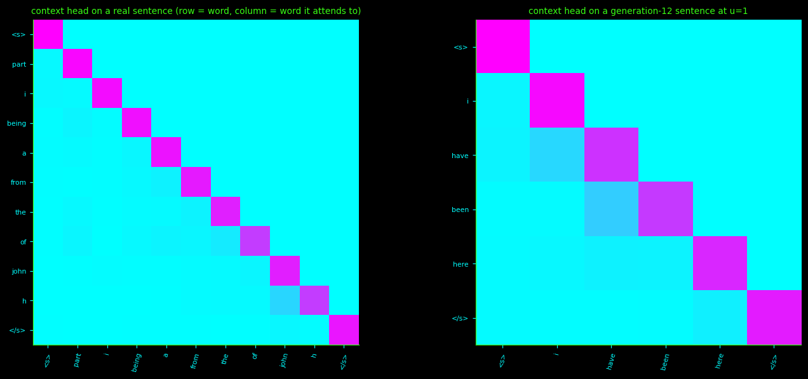
| diagnostic | u=0, gen 0 | u=0, gen 12 | u=1, gen 0 | u=1, gen 12 |
|---|---|---|---|---|
| surface_novelty | 0.539 | 0.516 | 0.562 | 0.554 |
| copy_rate | 0.005 | 0.011 | 0.005 | 0.000 |
| n_novel_rel | 29.250 | 22.250 | 24.500 | 0.000 |
| n_hidden_found | 10.500 | 9.750 | 8.500 | 0.000 |
| vocab_cover | 0.203 | 0.176 | 0.175 | 0.016 |
| fringe_word_cover | 0.083 | 0.061 | 0.059 | 0.000 |
| mean_len | 10.208 | 9.673 | 9.249 | 11.592 |
| attn_entropy | 0.424 | 0.413 | 0.419 | 0.577 |
At the extreme, the model finds nothing new
When the bad condition is at its maximum, the model eventually finds no novel relation and no hidden truth by late generations. Its content vocabulary also shrinks dramatically: it uses only a tiny fraction of the content words it used at the beginning. So the model is not just failing to discover anything new; it is also saying much less overall.
New wording alone cannot tell creativity from collapse
Surface novelty, meaning new word trigrams, stays at a moderate level even when the model has collapsed. In other words, the model can keep producing new-looking word combinations while its deeper content has fallen apart. So new wording by itself is not a reliable sign of creativity; it can also appear during collapse.
9. The dynamical system
- $x$ — state vector
- $\mu$ — mean
- $\sigma$ — standard deviation
- $z$ — standardised state
- $\bar u$ — mean synthetic share
- $s_u$ — standard deviation of synthetic shares
- $\tilde u$ — standardised control
- $\Theta$ — library
- $\Xi$ — coefficient matrix
- $z_{t+1}-z_t$ — generation change
- $\mathcal S$ the active (kept) terms; $\tilde\Theta$ the library with columns scaled to unit rms; $m$ number of training rows.
- $Y_{\cdot k}$ the one-generation changes of variable $k$; $\alpha\in\{0.01,0.1,1\}$ ridge strength; $I$ the identity matrix.
- $w^{(0)}$ the first fit with all terms; $\theta\in\{0.05,\dots,0.60\}$ the relative threshold. Fitting and dropping repeat until the set stops changing. An equation explaining under $1\%$ of the change is set to zero.
What the fit found
All 18 combinations of ridge strength and threshold were fitted. The one chosen on the validation shares has $21$ active terms out of $230$, no clipped step, and a negative one-step test skill ($-0.26$): it is worse than "nothing changes" for predicting a single generation, and is meant only for the long trend.
All 18 fits that were tried
| ridge α | threshold θ | terms | test one-step skill | validation free-run MSE | clipped steps |
|---|---|---|---|---|---|
| 0.01 | 0.05 | 164 | -0.959 | 0.175 | 4 |
| 0.01 | 0.1 | 128 | -0.905 | 0.172 | 5 |
| 0.01 | 0.2 | 60 | -0.784 | 0.166 | 14 |
| 0.01 | 0.3 | 36 | -0.373 | 0.193 | 14 |
| 0.01 | 0.45 | 19 | -0.420 | 0.736 | 14 |
| 0.01 | 0.6 | 11 | -0.393 | 1.397 | 0 |
| 0.1 | 0.05 | 166 | -0.674 | 0.166 | 5 |
| 0.1 | 0.1 | 126 | -0.637 | 0.166 | 6 |
| 0.1 | 0.2 | 71 | -0.458 | 0.164 | 12 |
| 0.1 | 0.3 | 46 | -0.260 | 0.174 | 12 |
| 0.1 | 0.45 | 21 | -0.264 | 0.365 | 0 |
| 0.1 | 0.6 | 10 | -0.424 | 1.334 | 0 |
| 1.0 | 0.05 | 179 | -0.150 | 0.346 | 4 |
| 1.0 | 0.1 | 143 | -0.140 | 0.348 | 5 |
| 1.0 | 0.2 | 87 | -0.116 | 0.382 | 4 |
| 1.0 | 0.3 | 54 | -0.064 | 0.425 | 0 |
| 1.0 | 0.45 | 33 | -0.104 | 0.620 | 0 |
| 1.0 | 0.6 | 22 | -0.095 | 0.789 | 0 |
The discovered dynamics, in z-scored units ($u$ is the standardised synthetic share):
- $D$ grows by a constant, as designed. $C$ is pushed up by $u$, while $R$, $Q$ and $F$ are pushed down by it; $F$ also falls faster when $R$ is high and $u$ is large.
- $A$, $M$ and $V$ get no $u$ term: they only relax. In z-units a term like $-0.249\,A$ pulls $A$ back towards the average of the training runs by about a quarter each generation. It is a relaxation, not a claim that $A$ goes to zero.
- $N$ decays, and decays faster when $u$ is large. $S$ rises with $D$ and falls with $M$.
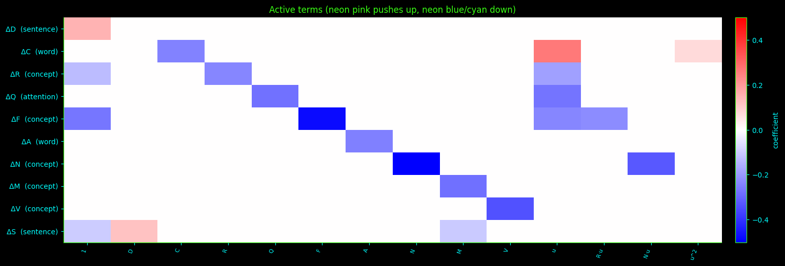
- $\hat z_t(u)$ the fitted system free-run from the generation-0 state (no correction); states beyond $\pm6$ are clipped and counted.
- $\bar z_t(u)$ the average real trajectory at share $u$; $\mathcal V$ the validation shares $\{0.4,0.9\}$; $T=12$ generations; $K=10$ variables.
- $\mathrm{skill}_k$ for variable $k$ on test shares $\{0.1,0.6,0.95\}$: $1$ perfect, $0$ no better than "nothing changes", negative worse.
- Models are ranked by fewest clipped steps (including a $36$-generation stability run), then lowest $\mathrm{MSE}_{\mathrm{fr}}$, then the sparsest within $10\%$ of the best.
Does it predict unseen mixtures?
Free-run from the generation-0 state on shares used neither to fit nor to tune. Dots are the real mean trajectories, lines are the fitted system.
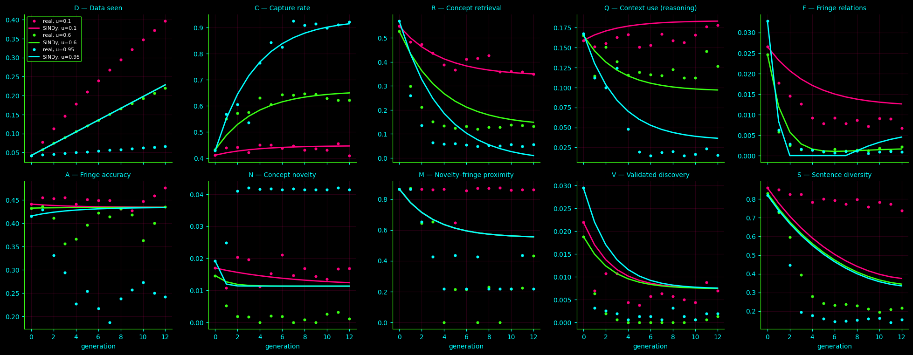
Free-run error against "nothing changes" (persistence), in z-units; lower is better:
| u | SINDy MSE | persistence MSE | skill | clipped steps |
|---|---|---|---|---|
| 0.10 | 0.295 | 0.847 | +0.65 | 0 |
| 0.60 | 0.254 | 1.771 | +0.86 | 0 |
| 0.95 | 0.927 | 3.695 | +0.75 | 0 |
Per-variable free-run skill. "flat" means the variable barely moves at that share:
| u | D | C | R | Q | F | A | N | M | V | S |
|---|---|---|---|---|---|---|---|---|---|---|
| 0.10 | +0.75 | flat | +0.97 | flat | +0.87 | flat | flat | flat | +0.93 | -14.01 |
| 0.60 | +1.00 | +0.97 | +0.93 | +0.74 | +0.99 | -0.05 | +0.42 | +0.62 | +0.78 | +0.88 |
| 0.95 | flat | +0.98 | +0.96 | +0.96 | +0.99 | -0.19 | -0.84 | +0.72 | +0.87 | +0.81 |
- The system beats persistence at every unseen share (skill $+0.65$, $+0.86$, $+0.75$) with no clipped step.
- It is good for $D$, $C$, $R$, $Q$, $F$, $V$ and $M$ wherever they move, and for $S$ at $u=0.6$ and $0.95$.
- It is weak for $A$ and $N$, which have no useful dynamics here. The $-14.01$ for $S$ at $u=0.1$ is a small-denominator effect: $S$ hardly moves at that share.
10. Sweeps
- $\bar F_t(u)$ the mean fringe retrieval at share $u$ and generation $t$; Retention is the share of the generation-0 fringe left after $T$ generations.
- Yield proved relations per new relation written, computed while the output temperature $\tau$ is varied over $\{0.02,0.03,0.04,0.06,0.09\}$ at $u=0.5$.
Sweep A: the share of synthetic text
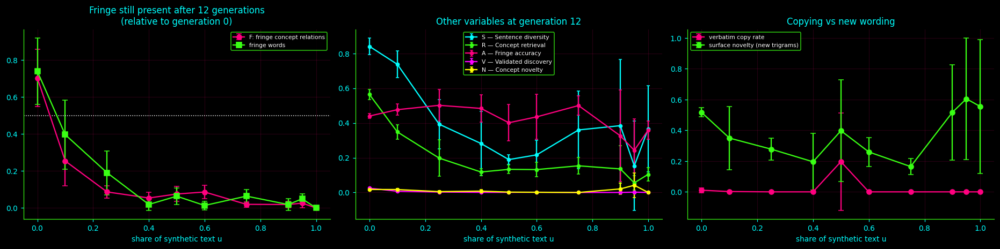
The notebook's own answer: largest synthetic share keeping ≥ 50% of the generation-0 fringe relations: 0.00
In other words, only $u=0$ keeps half of the generation-0 fringe. Any synthetic share at all costs rare relations and rare words.
Sweep B: output temperature at $u=0.5$
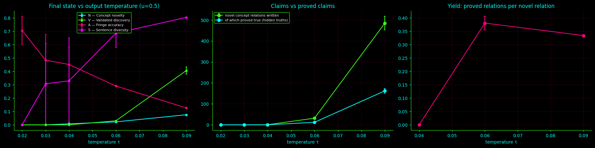
- Below $\tau=0.04$ the model writes no novel relation at all, and its sentences collapse ($S\approx0$ at $\tau=0.02$).
- At $\tau=0.09$ it writes about $485$ novel relations and about $160$ of them turn up in the hidden text, a yield of about $0.33$. In exchange fringe accuracy $A$ falls from about $0.7$ to $0.13$.
- A caution. Outside the $9{,}918$ real relations there are only $11{,}175-9{,}918=1{,}257$ possible pairs, and $399$ of them are hidden truths. Writing never-seen pairs at random would already give a yield of about $399/1{,}257\approx0.32$ (my back-of-the-envelope baseline, not a notebook output). A yield of $0.33$ to $0.38$ is therefore not clearly better than chance.
Results
Collapse at the full synthetic share
When all training text was model-written, the model collapsed. Its use of attended context fell to zero. Concept retrieval dropped from about half to about one tenth. Fringe relations and validated discoveries disappeared. Stability fell by more than half. At the same time, capture rose from about four tenths to about nine tenths. The model ended up writing the same short sentence again and again, and one concept grew from about a fifth to about seven tenths of the concept words it wrote.
At zero synthetic share
The run was stable except for discovery, which accumulates by design, and fringe, which halved. Only the zero-synthetic run kept half of the fringe relations it started with.
The fitted long-run system
The fitted system used twenty-one of two hundred thirty possible terms, never hit clipping, and beat “nothing changes” on unseen shares. Its free-run skill was good at the low, middle, and high unseen shares. But its one-generation prediction was worse than “nothing changes,” so it is meant for long trends, not next-step forecasts. It tracked discovery, retrieval, fringe, validation, capture, and context use well. It was weak for novelty and relaxation.
Novelty
Raising the temperature produced more novel relations and more proved relations. But the share that was proved stayed close to what random guessing would give, and fringe accuracy got worse.
Conculsion
Although we were able to model it for a simple toy model this did not answer key several questions like what if we take an large scale model? what if the data is extremely large and what are consequences of using an update mechanism that updates the whole weights during the training regime. Although this is a toy model with severly limited data we were able to observe the trend for the variable changes. In future I hope to narrow down the conepts to exclusively human values and see how the dyanmics play out in perhaps some large model like llama series with a bit more data.